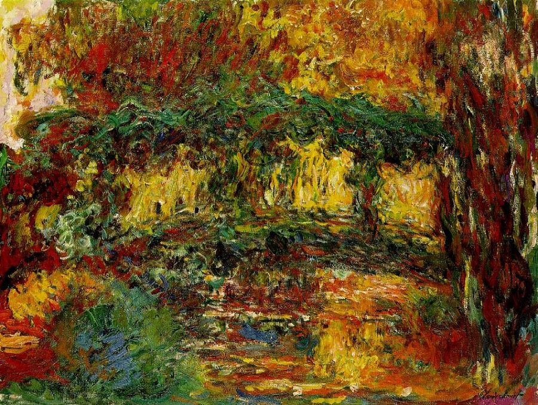
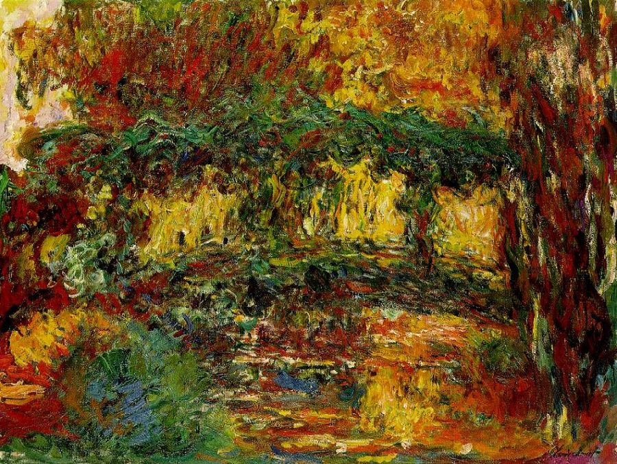
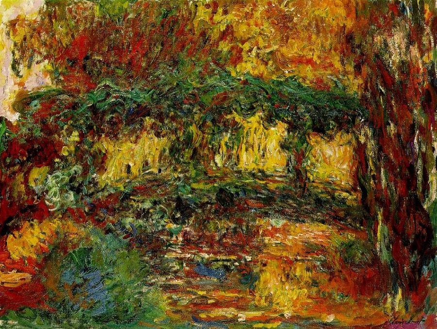

Algumas Obras:
 

Claude Monet foi um pintor francês que nasceu em Paris, França, no dia 14 de novembro de 1840. Começou a carreira muito jovem, recebendo o apoio somente da tia - os outros parentes achavam que ele deveria trabalhar no armazém da família - que também fora pintora e lhe deu algum dinheiro para que ele pudesse estudar arte em Paris. Lá fez novas amizades e conheceu Camille, com quem se casou, apesar da desaprovação de seu pai. Os dois tiveram dois filhos, Jean e Michel.
Uma curiosidade é que Monet pintou a esposa muitas vezes - em alguns casos, quatro, cinco mulheres no mesmo quadro, e todas eram Camille.
O começo de sua carreira artística foi marcado por dificuldades financeiras e conturbações no meio familiar. Após o falecimento de Camille em 1879, Monet alugou a famosa casa em Giverny, em 1883, onde foi morar com seus dois filhos e Alice (uma grande amiga) e seus seis filhos, somando oito crianças.
Na velhice, em meados de 1900, veio a sofrer com catarata nos olhos, o que influenciou o traço e o uso das cores em suas obras, que se tornaram mais abstratas e em tons vermelhos. Pouco tempo depois da realização da operação para correção da visão e do término dos quadros das ninféias, o artista Monet faleceu, aos 86 anos, em 5 de dezembro de 1926.
Suas obras de arte seguiam, como temática principal, as paisagens da natureza e trabalhavam, de forma harmônica, as cores e luzes, criando imagens belas e fortes.
Monet foi considerado um dos pintores mais importantes da Escola Impressionista e alguns críticos de arte o consideram um dos mais influentes pintores de todos os tempos.
